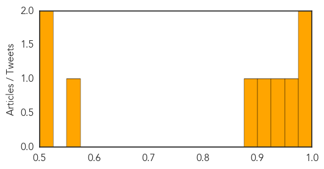
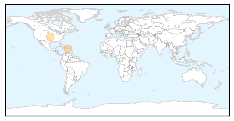

Measles
30-Day Web Trend
0 alerts, 0 warnings
30-Day Twitter Trend
0 alerts, 0 warnings

Article Locations

Article Confidences
Top Articles:
- 0.988
- Measles confirmed across Canada, doctors blame anti-vaxxer movement
- 0.981
- City weeks away from declaring measles outbreak over
- 0.964
- More measles cases in province
- 0.947
- Measles In Edmonton Increase Cases In Alberta To 6
- 0.916
- Measles confirmed in Edmonton; first case since 2012
- 0.892
- Doctor: Potential for outbreak of measles looms in Washington - Local News
- 0.551
- Customers at two Calgary restaurants put on warning list
- 0.523
- Politicians should stop pandering to anti-fluoridation campaigners
- 0.517
- Measles spike triggers drive for vaccinations
Top Tweets:
-
No tweets found for Apr 04, 2014
Chikungunya
30-Day Web Trend
0 alerts, 0 warnings
30-Day Twitter Trend
1 alerts, 0 warnings

Article Locations
Article Confidences

Top Articles:
Top Tweets:
-
No tweets found for Apr 04, 2014